All Talismans Guide for Hero Wars Alliance
- By: Alexandre Domingos. .
Talismans are one of the biggest power spikes in Hero Wars Alliance, but the hardest question for most players is not only where to get them. The real question is this: when a hero has two talismans, which one should you focus on first?
This guide now focuses mainly on helping beginners decide between Talisman 1 and Talisman 2 for each hero. After that, we also explain where talismans come from today, including Talisman Fever, Keepers' Shop, and the Frontier Shop, so you can match your priority list with the current monthly rotation.
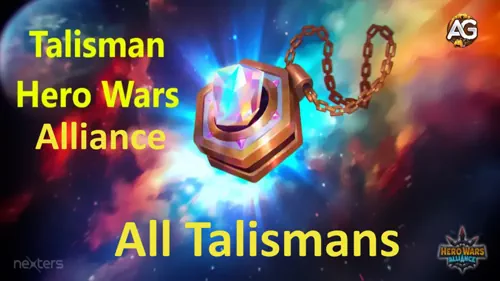
Table of Contents
What Talismans Do
A talisman is a special item linked to a specific hero. When equipped, it changes that hero's stats and can completely change how that hero performs in battle. For many heroes, a talisman is not a small upgrade. It is a major step that can make the hero feel faster, safer, stronger, or more useful in a specific role.
Some heroes have more than one talisman, but you can only equip one at a time. That means choosing the right talisman matters. One version may be better for attack, while another may be better for defense, Arena, or a specific team composition.
If you are a beginner, do not worry about collecting every talisman in the game. That is not realistic at the start. Your first goal should be simple: get a talisman for a hero you already use every day and learn how the upgrade materials work.
Alexandre Tips: A very common beginner mistake is thinking a talisman works like a skin, but they are different systems. When you level up a skin, the hero keeps those stats permanently, and changing to another skin later only changes the visual appearance in battle. A talisman does not work that way: the active stats change according to the talisman you equip, so switching from one talisman to another can change the hero's build and role immediately.
All Talismans Guide: Which Talisman Is Best?
The table below is the fastest way to decide what to focus on for each hero. If the last column says 1st, the first talisman is usually the better long-term investment. If it says 2nd, the second talisman is generally the stronger choice. When a recommendation depends on the game mode, I noted that directly in the table.
If the second talisman column is empty, that usually means the hero only has one relevant talisman listed for now. For beginners, this table should be treated as a priority guide, not as a rule that replaces team context, but it is the best starting point when resources are limited.
| Hero | Talisman 1 | Talisman 2 | What Is Best |
|---|---|---|---|
 Aidan Aidan | Intelligence & Magic Attack | 1st | |
 Alvanor Alvanor | 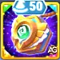 Intelligence & Health | 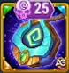 Magic Crit & Armor | 1st |
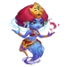 Amira | 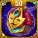 Intelligence & Health | 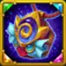 Armor & Magic Crit | 2nd |
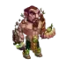 Andvari | 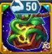 Strength & Health | 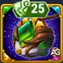 Magic Reflection & Physical Attack | 1st |
 Arachne Arachne | 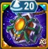 Intelligence & Magic Attack | 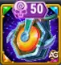 Magic Crit & Magic Penetration | 2nd |
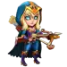 Artemis | 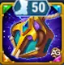 Agility & Physical Attack | 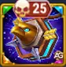 Critical Hit & Armor | 1st |
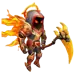 Astaroth | 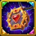 Strength & Magic Defense | 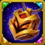 Health & Armor | 2nd |
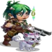 Astrid | 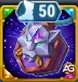 Agility & Armor Penetration | 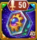 Physical Attack & Critical Hit | 1st |
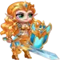 Aurora | 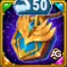 Strength & Dodge | 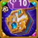 Magic Attack & Magic Penetration | 1st |
 Byrna Byrna | 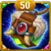 Intelligence & Magic Penetration | 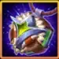 Armor & Magic Reflection | 1st |
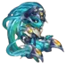 Cascade | 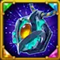 Agility & Physical Attack | 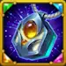 Health & Armor | 1st |
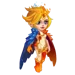 Celeste | 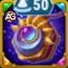 Intelligence & Armor | 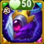 Health & Magic Attack | 2nd |
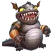 Chabba | 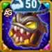 Strength & Health | 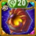 Magic Defense & Armor | 1st |
 Cleaver Cleaver | 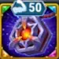 Strength & Health | 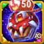 Critical Hit & Toughness | 1st |
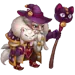 Cornelius | 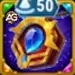 Intelligence & Magic Attack | 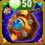 Health & Armor Penetration | 2nd |
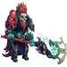 Corvus | 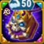 Strength & Physical Attack | 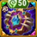 Magic Defense & Armor | 2nd |
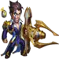 Crow | 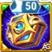 Agility & Armor | 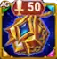 Physical Attack & Critical Hit Chance | 2nd |
 Dante Dante | 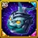 Physical Attack & Dodge | 2nd | |
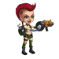 Daredevil | 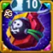 Agility & Armor Penetration | 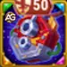 Armor Penetration & Physical Attack | 2nd |
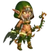 DarkStar | Agility & Physical Attack | Critical Hit & Armor Penetration | 2nd |
 Dorian Dorian | Intelligence & Magic Penetration | Armor & Health | 1st – Highly Upgraded, 2nd – Less Upgraded |
 Drayne Drayne | Strength & Physical Attack | Armor Penetration & Crushing | 1st |
 Electra Electra | Strength & Toughness | Magic Reflection & Magic Attack | 2nd |
| Elmir | Agility & Physical Attack | Dodge & Health | 2nd |
| Faceless | Intelligence & Health | Armor & Magic Attack | 1st |
| Fafnir | Strength & Physical Attack | Physical Attack & Armor | 1st |
 Folio Folio | Intelligence & Magic Attack | Armor & Toughness | 2nd |
| Fox | Agility & Physical Attack | Critical Hit & Health | 1st |
| Galahad | Strength & Critical Hit | Physical Attack & Armor Penetration | 2nd |
| Ginger | Agility & Armor Penetration | Critical Hit & Critical Hit | 2nd |
 Guus Guus | Armor & Physical Attack | 1st With Relic Level 10 or High; 2nd Without Relic | |
| Heidi | Intelligence & Armor | Dodge & Magic Attack | 2nd |
| Helios | Intelligence & Magic Penetration | Magic Crit & Magic Attack | 2nd |
 Iris Iris | Intelligence & Magic Defense | Armor & Magic Penetration | 2nd |
| Isaac | Agility & Physical Attack | Toughness & Critical Hit | 2nd |
| Ishmael | Agility & Physical Attack | Armor & Critical Hit | 2nd |
| Jet | Intelligence & Magic Attack | Dodge & Health | 1st |
 Jhu Jhu | Strength & Critical Hit | Physical Attack & Armor | 2nd |
| Jorgen | Strength & Magic Defense | Magic Attack & Armor | 2nd |
| Judge | Intelligence & Magic Attack | Armor & Magic Penetration | 1st |
 Julius Julius | Strength & Armor Penetration | Physical Attack & Toughness | 2nd |
| K'arkh | Agility & Magic Defense | Physical Attack & Vampirism | 2nd |
 Kai Kai | Intelligence & Magic Attack | Magic Penetration & Armor | 2nd |
 Kayla Kayla | Agility & Physical Attack | 2nd | |
| Keira | Agility & Physical Attack | Health & Magic Defense | 1st |
 Kendle Kendle | Intelligence & Armor | Crushing & Magical Critical Hit Chance | 2nd |
| Krista | Intelligence & Magic Attack | Health & Magic Penetration | 2nd |
| Lara Croft | Agility & Armor Penetration | ||
| Lars | Intelligence & Magic Attack | Magic Attack & Armor | 2nd |
| Leonel | Agility & Health | ||
 Lian Lian | Intelligence & Magic Attack | Armor & Health | 2nd |
| Lilith | Strength & Armor | Health & Magic Attack | 2nd |
 Luther Luther | Strength & Health | 2nd | |
 Markus Markus |  Strength & Armor Strength & Armor |  Magic Defense & Physical Attack Magic Defense & Physical Attack | 1st |
| Martha | Intelligence & Health | Magic Attack & Armor | 1st |
 Maya Maya | Intelligence & Magic Attack | Armor & Health | 1st |
 Miu Miu | Intelligence & Armor | Magic Crit & Magic Attack | 2nd |
| Mojo | Intelligence & Magic Attack | Armor & Magic Crit | 2nd |
| Morrigan | Intelligence & Health | Armor & Magic Attack | 1st |
| Mushy | Intelligence & Armor | Magic Crit & Toughness | 1st for PvP, 2nd for PvE |
 Nebula Nebula | Agility & Physical Attack | Armor & Dodge | 1st |
| Ninja Turtles | Agility & Armor | ||
 Octavia Octavia | Agility & Health | Toughness & Physical Attack | 2nd |
| Orion | Intelligence & Armor | Toughness & Magic Attack | 2nd |
 Oya Oya | Strength & Critical Hit | Physical Attack & Crushing | 2nd |
 Peech Peech | Agility & Physical Attack | Health & Critical Hit | 2nd |
 Phobos Phobos | Intelligence & Magic Attack | Armor & Health | 1st |
| Polaris | Intelligence & Magic Crit | Intelligence & Magical Crit Chance | 2nd |
| QingMao | Agility & Critical Hit | Health & Physical Attack | 1st |
| Rufus | Strength & Health | Armor & Magic Attack | 2nd |
 Satori Satori | Intelligence & Magic Penetration | Armor & Health | 1st for midline, 2nd for frontline |
| Sebastian | Agility & Armor | Physical Attack & Critical Hit | 2nd |
| Soleil | Intelligence & Armor | Magic Reflection & Health | 2nd |
 Somna Somna | Agility & Health | Toughness & Physical Attack | 2nd |
 Tempus Tempus | Intelligence & Armor | Toughness & Health | 2nd |
| Thea | Intelligence & Magic Attack | Toughness & Health | 2nd |
 Tristan Tristan | Armor & Physical Attack | 2nd | |
 Wodryn Wodryn | |||
| Xe'sha | Intelligence & Magic Attack | Armor & Magic Penetration | 2nd |
 Yasmine Yasmine | Agility & Critical Hit | 2nd | |
| Ziri | Strength & Armor | Health & Armor Penetration | 1st |
Where to Get Talismans Now
The most reliable way to hunt for talismans today is the Talisman Fever event. Inside the event, the most important place is the Keepers' Shop, where you spend Talisman Coins to buy the featured talisman of that event rotation.
This is the detail that matters most: the talismans available in the event change with the monthly rotation. So even if you know exactly which talisman you want, there is no guarantee it will appear in the next event. As more talismans are added to the game, it becomes harder to predict when a specific one will return.
For that reason, beginners should think in terms of opportunity, not perfection. If a talisman appears for a hero you use all the time, it may be smarter to secure it now instead of waiting months for an ideal choice that may not return soon.
If you want to see the mission breakdown for the current event, visit our full guide here: Talisman Fever Event Tips in Hero Wars Alliance.
| Source | How It Works | Best Use for Beginners |
|---|---|---|
| Talisman Fever | Complete event missions and collect currencies during the limited-time event. | The best starting point because you get coins and upgrade materials together. |
| Keepers' Shop | Spend Talisman Coins on the talisman featured in that event rotation. | Buy the talisman for a core hero you actively use. |
| Frontier Shop | Talismans can appear in daily shop offers, but they are costly. | Good later on, but difficult for most beginners because Frontier Coins are valuable and slower to save. |
What Each Currency Is For
Talisman Fever feels much easier when you understand the three main currencies. New players often mix them up, spend the wrong item first, and then feel like no progress happened.
| Currency | Use | Beginner Tip |
|---|---|---|
|
Talisman Coin
|
Used in Keepers' Shop to buy the talisman offered during the event. | If your target talisman is available, this is usually your first priority. |
|
Mastery Crystal
|
Used to level up a talisman. | Do not spread these across many heroes early. One leveled talisman is better than five weak ones. |
|
Meta Cube
|
Used to reroll the bonus stats on a talisman. | Beginners should save these until they understand which hero will stay in their main team for a long time. |
In simple terms: Talisman Coins get the item, Mastery Crystals level it up, and Meta Cubes improve the bonus stats. If you remember only that, you are already ahead of many players.
How Reroll Works?
In Hero Wars Alliance, every hero has unique talismans. A hero's first talisman usually follows the hero's main attribute and then adds three bonus stat slots. These bonus slots can be different depending on the hero, such as Magic Attack, Magic Penetration, Physical Penetration, Armor Penetration, Health, Armor, or other useful stats.
The second talisman can be very different because it may give two varied main stats, and sometimes those stats are stronger or better suited to a specific build. That does not automatically mean Talisman 2 is always better. Before spending a lot of resources, compare which talisman actually helps that hero and your team the most.
A third talisman does not exist yet at the moment, so your real choice today is usually between Talisman 1 and Talisman 2. Start by leveling the talisman with Mastery Crystals. Talismans can be upgraded up to level 50, and more reroll slots unlock as the talisman level increases. The third bonus slot only unlocks at level 50.
Because of that, the best moment to seriously reroll is after you unlock more slots, especially after reaching level 50. There are two problems: first, to get the maximum value from a talisman, you want all three slots available; second, getting all three slots with maximum rolls is extremely difficult. Alexandre has only managed to get three maximum slots on the Teenage Mutant Ninja Turtles so far, which shows how rare a perfect reroll can be.
Each reroll can be done with Emeralds or with Meta Cubes. Meta Cubes can be obtained from events and from the Harbor. To understand how the Harbor works, read our Hero Wars Harbor Guide.
Beginner Plan for Talisman Fever
If you are new, the event can feel overwhelming because the missions are spread across logins, energy, emerald spending, and sometimes paid progress. The safest way to approach it is to keep your goal very small and very clear.
Step 1: Pick One Hero Before the Event Starts
Choose one hero from your main team. Not a future dream team. Not a hero you might build one day. Pick someone you use right now in Campaign, Arena, Tower, or Guild activities.
Step 2: Check the Shop Rotation First
When Talisman Fever begins, look at the Keepers' Shop before spending your resources. If the talisman you want is not there, it may be better to save part of your resources and wait for a future event instead of spending everything out of excitement.
Step 3: Finish the Easy Missions First
Beginners should focus on the missions they can complete naturally: logging in, spending campaign energy, and using normal daily resources. Paid milestones and very high spending goals are not the right target for most players at the start.
Step 4: Buy the Talisman Before Extra Materials
If your chosen talisman is available, getting the talisman itself is usually more important than buying more reroll materials. A hero cannot benefit from Mastery Crystals or Meta Cubes if you still do not have the talisman you wanted in the first place.
Step 5: Upgrade Slowly and With a Plan
After getting a talisman, do not rush to reroll perfect stats immediately. First, level the talisman for the hero that gives you daily value. Perfect optimization is for later. Functional progress is what helps beginners most.
A Good Beginner Mindset
In your first events, success does not mean getting everything. Success means leaving the event with one clear improvement for your account: one useful talisman, one stronger hero, and fewer wasted resources.
Should Beginners Buy From Frontier Shop?
Yes, talismans in the Frontier Shop can be worth buying, but this is usually a tougher path for beginners. These talismans appear in the daily offers and are among the most expensive items in the shop, so getting one too early can drain coins you may need for more urgent progression.
That does not mean you should ignore them forever. It means you should compare the purchase against your current needs. If your account still needs broad upgrades, buying a daily Frontier Shop talisman may slow down your overall progress. If your main team is already stable and a key talisman appears, the purchase becomes much easier to justify.
If you are still building your account, Frontier Coins are usually harder to save than event currencies from Talisman Fever. For that reason, many beginners get their first important talisman from the event first and only later start chasing Frontier Shop offers.
If you want to understand the Frontier system better, read our guide here: Eternal Frontier Guide for Hero Wars Alliance.
Common Mistakes New Players Make
- Trying to collect every talisman: the rotation is too large, and beginners need focus more than variety.
- Spending Meta Cubes too early: rerolling too soon often wastes resources on heroes that leave your team later.
- Buying without checking the hero first: always think about who is actually carrying your account today.
- Ignoring the event missions page: if you do not know where the currencies come from, the event feels random. Check the mission guide and plan your progress.
- Using Frontier Coins impulsively: Frontier Shop talismans are attractive, but they are expensive and not always the best first purchase.
Quick FAQ
Do I need every talisman?
No. Most beginners should focus on one core hero at a time. A smaller number of well-chosen talismans is much better than a collection of random unfinished ones.
What if the talisman I want is not in the event shop?
Then patience is part of the strategy. Talismans rotate between monthly Talisman Fever events, so the one you want may take time to return. This is exactly why you should avoid panic-spending on something your account does not need.
What should I buy first in Talisman Fever?
In most cases: the talisman for your main hero first, then upgrade materials. Buying many materials without securing the talisman you actually want can leave you frustrated.
Is Frontier Shop a bad place to get talismans?
No. It is just a more expensive and slower path for many new accounts. It becomes much better when your Frontier income is more stable.
What should free-to-play or light spenders focus on?
Focus on event missions you can complete naturally, protect your Talisman Coins, and ignore the pressure to chase every premium objective. One smart purchase helps more than ten rushed decisions.
Final Thoughts
The modern talisman system in Hero Wars Alliance is no longer just about waiting for a random event. Today, you need to understand Talisman Fever, the Keepers' Shop, the monthly rotation, and the occasional appearance of talismans in the Frontier Shop.
For beginners, the best approach is simple: learn the currencies, watch the event shop carefully, buy for the heroes you already use, and do not feel forced to chase everything at once. The game becomes much easier when you stop asking, “How do I get every talisman?” and start asking, “Which one helps my account the most right now?”
If you want to follow each monthly event more closely, keep an eye on our updated event guides, because the rotation matters as much as the resource itself.
Video Suggestions
You may be interested:
Comment Section
To participate in the chat session on the Talisman Guide page on Alexandre Games Blog, click the button below: